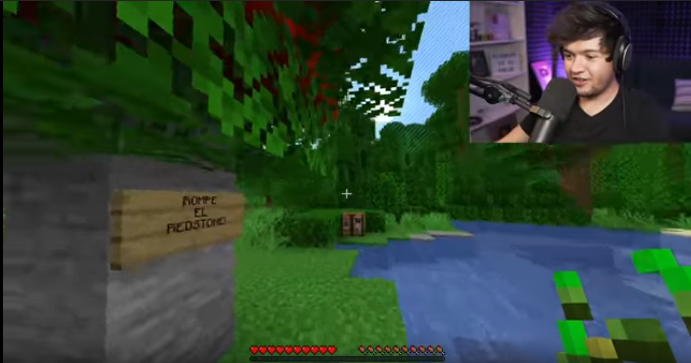

Pantallas y comunicación no verbal

Polimedia, es el nombre que le ha dado la Universidad Politécnica de Valencia a sus producciones audiovisuales multimedia, que combinan la figura del docente junto a una captura de pantalla de fondo, ya sea una presentación de diapositivas o un screencast (la imagen de lo que vemos en el monitor en tiempo real).
Si bien este formato ya existía para otros usos (la comunidad de gamers y productores de tutoriales online la usa desde el comienzo de los tiempos), en el mundo educativo se popularizó este término.
El éxito de este formato se debe a su potencia educativa que permite contener en un mismo video la comunicación no verbal de los gestos del docente, su voz, y la visualización gráfica de los contenidos que va presentando.
Haciendo un buen uso de este formato, es decir siguiendo en buena medida los principios multimedia de Mayer, se pueden lograr materiales educativos audiovisuales de gran valor. A continuación aprenderemos a utilizar la herramienta técnica para desarrollarlos.